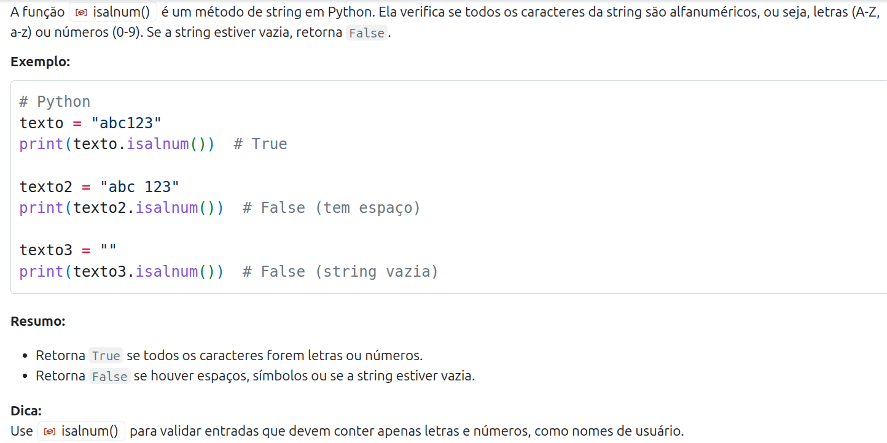

Projetando Funções
PASIA - Aula T.2
DAC - ICET - Universidade Federal de Lavras
19/08/2025
O conteúdo dessa aula é baseado no capítulo 3 do livro abaixo.

Pela pesquisa de perfil da turma vi que alguns alunos conhecem Python e outros não.
- É importante então apresentar a linguagem nas primeiras aulas.
- Mas, junto com a apresentação da linguagem, vou apresentar também boas práticas e dicas de uso do Copilot.
- que podem ser interessantes também para que tem mais experiência com Python.
- Espero então que a aula seja útil para todos :)
Lembrete
Lembre-se que Assistentes de IA são não determinísticos. Portanto, ao experimentar os exemplos dessa aula, você pode obter resultados diferentes.
Introdução
Um dos desafios para programadores iniciantes usarem o Copilot
- é saber o que é uma tarefa razoável para que ele consiga gerar uma boa solução.
Como já mencionamos antes, passar uma tarefa muito grande para o Assistente de IA
- pode fazer com que ele falhe
- e falhe de uma forma que seja muito difícil de corrigir.
Na verdade essa questão de complexidade não é um problema só para o Copilot, mas para nós mesmos.
- Engenheiros de Software que tentam resolver problemas muito complexos sem quebrá-los em partes menores também falham.
Existem diversas formas de tratar, no código, a decomposição de um problema em partes.
- A mais simples delas é a através de funções.
Uma função é um trecho de código que resolve uma tarefa específica
- e que não é tão complexo a ponto de ficar difícil de implementar e testar.
Claro que vocês já sabem o que são funções e como elas podem ser implementadas.
- Mas será que vocês sabem (ou se lembram) quais são os critérios para projetar boas funções?
- Será que pensam nisso na hora de programar, ou simplesmente saem programando?
- Além disso, no contexto do uso de IA, quais seriam as melhores práticas para projetar funções?
Funções
Uma função é uma pequena tarefa que pode ser usada para resolver tarefas maiores.
- Essas tarefas menores, por sua vez, podem ser usadas para resolver tarefas maiores.
Para exemplificar, encontre as palavras abaixo no quebra-cabeça.

Qual foi o raciocínio que você usou para encontrar as palavras?
- Procurar todas as palavras de uma vez é uma tarefa muito grande e complicada.
Você poderia, por exemplo, escolher uma palavra para encontrar primeiro.
- E, para encontrar essa palavra, você poderia procurar a primeira letra.
- E então procurar o restante da palavra buscando para a direita, esquerda, para cima ou para baixo.
Repare que estamos decompondo o problema de resolver o caça-palavras
- em tarefas menores, que, se resolvidas, nos ajudam a resolver o problema como um todo.
É essa a estratégia que precisamos seguir na hora de programar.
Uma função pode ser vista como um contrato 📝.
- Se existir uma função
maiore for dito que ela recebe dois números e retorna o maior deles, - nós podemos acreditar que se a função for chamada com os números 2 e 5, ela retornará 5.
- Nós não precisamos saber como a função funciona para utilizá-la.
- Da mesma forma que não precisamos entender de mecânica de carros para frear um carro 🚗.
- Nós acionamos o pedal e sabemos que a velocidade do carro vai diminuir 🙌.
Na aula passada usamos o Copilot para gerar código a partir de um comentário.
- Podemos fazer o mesmo para criar funções.
Esse é um possível resultado gerado pelo Copilot.
# escreva uma função que retorna o
# maior de dois números
# a entrada são dois números
# e a saída é o maior entre eles
def maior_numero(a, b):
if a > b:
return a
else:
return b- Note que assinatura de uma função em Python começa com a palavra-chave
def.- É isso que diz para o Python que o que vem a seguir é uma função.
- Depois vem o nome da função (
maior_numero, nesse caso).- Dica: se parecer difícil escolher um nome para a função, pode ser um sinal de que ela está fazendo muitas coisas.
# escreva uma função que retorna o
# maior de dois números
# a entrada são dois números
# e a saída é o maior entre eles
def maior_numero(a, b):
if a > b:
return a
else:
return b- Em seguida, temos os parâmetros da função, que são as entradas que ela recebe.
- Por fim, temos o corpo da função, que é onde a lógica é implementada.
- Uma função pode retornar valores ou não.
- Quando ela retorna usamos a palavra-chave
return.
# escreva uma função que retorna o
# maior de dois números
# a entrada são dois números
# e a saída é o maior entre eles
def maior_numero(a, b):
if a > b:
return a
else:
return bVeja que, diferente de linguagens fortemente tipadas, em Python não precisamos especificar os tipos
- nem dos parâmetros e nem do retorno da função.
Funções (dicas avançadas)
Dica para programadores avançados:
- Apesar de Python não ser fortemente tipado
- é uma boa prática usar anotações de tipo (type hints) para melhorar a legibilidade do código.
- Isso ajuda muito na implementação de sistemas maiores.
- Mas afinal, o que é isso?
Vamos gerar novamente a função maior_numero, mas agora com type hints (acrescentando uma linha na docstring).
As anotações de tipo servem como documentação e podem ser utilizadas por ferramentas de análise sintática.
- Ou seja, são úteis para dizer para outros programadores o que exatamente a função espera e o que retorna.
- E, principalmente, para que as IDEs, como o VS Code, apontem possíveis erros antes mesmo de rodar o código.
- Isso melhora a qualidade do código e facilita a manutenção.
Experimente, por exemplo, chamar a função no VS Code passando uma string.
Mas é importante deixar claro que os type hints não alteram o comportamento do código.
- Como Python não é uma linguagem compilada, o código vai ser executado
- e os type hints são ignorados em tempo de execução.
- Ou seja, se a função for chamada passando um parâmetro de tipo errado
- isso não causará um erro imediatamente, mas pode levar a comportamentos inesperados.
- Na verdade quando dá erro é até melhor, o problema maior é quando passa batido.
Nos materiais da disciplina vou evitar anotações de tipo para manter os exemplos mais simples.
- Mas para quem tem mais experiência com Python, recomendo muito que se acostumem a usar.
Criando funções com Copilot
Nós havíamos passado para o Copilot a tarefa de criar a função completa.
- Mas outra forma de usar o Copilot é nós mesmos definirmos a assinatura da função
- e pedirmos ao Copilot apenas para implementar o corpo da função.
- Isso geralmente leva a resultados melhores.
Nós podemos fazer isso usando docstrings.
- Docstrings são strings de documentação que podem ser usadas para descrever o que uma função faz.
- Elas são definidas logo abaixo da assinatura da função e são delimitadas por três aspas duplas.
Dica
É uma boa prática escrever docstrings para suas funções.
Nós poderíamos então gerar a função maior_numero de forma diferente
- Escrevendo nós mesmos o cabeçalho e a docstring da função.
- E deixando o Copilot gerar o corpo da função.
- O que torna a geração do código mais fácil para o Copilot.
Vamos então refazer a função, mas agora nós definimos o cabeçalho e docstring da função.
O Copilot pode então gerar o corpo da função.
Para terminar, vamos pedir ao Copilot para chamar a função que criamos.
Segue uma sugestão de ciclo de criação de funções com Copilot.
- Defina o comportamento desejado para a função
- Escreva um prompt que descreva a função da forma mais clara possível
- Deixe o Copilot gerar o código
- Leia o código para avaliar se ele parece razoável
- Teste o código para conferir se ele está correto
- Se estiver correto, a função está pronta.
- Se não estiver, volte ao passo 2.
Exemplos de boas funções com Copilot
Investimentos em Bolsa do Tião
Tião é um investidor em uma ação chamada PASIA.
- Ele comprou 10 ações por R$ 15.
- Agora cada ação vale R$ 17.
- Ele quer saber quanto lucro 💰 teria se vendesse as ações agora.
Essa seria uma boa função para calcular o lucro do Tião?
Não, essa função não é boa.
- Por que?
Quando criamos uma função devemos criá-la da forma mais geral possível.
- Com isso, a função pode ser reutilizada em diferentes contextos.
- Repare que, no caso do Tião, ele não quer saber o lucro apenas de uma compra específica
- mas sim de qualquer compra que ele faça.
Mesmo que você ache que isso parece muito simples.
- É muito comum que programadores experientes repitam esse erro em contextos mais complexos.
Como deveria ser a assinatura da função, de forma que ela seja mais útil?
- Quais parâmetros deveria receber?
- a quantidade de ações compradas
- o valor que as ações foram compradas
- e o preço de atual das ações.
- a quantidade de ações compradas
Seguindo a estratégia que vimos antes,
- vamos criar uma docstring para explicar ao Copilot o que a função precisa fazer.
Dica
Claro que essa função é muito simples e você poderia pedir ao Copilot para criar inclusive a assinatura e a docstring.
Mas a ideia aqui é que você entenda o processo com uma função simples, para que depois possa aplicar para funções mais complexas.
Podemos agora pedir ao Copilot para gerar o corpo da função.
Nós já fizemos os três passos iniciais do ciclo de design de funções.
- Defina o comportamento desejado para a função
- Escreva um prompt que descreva a função
- Deixe o Copilot gerar o código
- Avalie o código para conferir se ele parece razoável
- Teste o código para conferir se ele está correto
O próximo passo é avaliar se o código parece razoável.
O exemplo é simples para avaliar 😊
O passo seguinte é testar o código.
- E aqui vai uma dica interessante de uso do VS Code para testar códigos Python.
Você pode selecionar o código da função no VS Code e apertar Shift + Enter
- Ao fazer isso, o trecho de código selecionado será executado em um terminal Python.
- E você poderá então fazer chamadas de teste a essa função no terminal Python.
Um primeiro teste óbvio que poderíamos fazer
- é calcular o lucro da compra específica de ações do Tião.
Está certo?
- Sim, como ele teve 2 reais de lucro em cada ação e são 10 ações, o total é 20.
Precisamos agora pensar em mais casos de testes.
Testar se as ações tivessem subido para R$ 18 em vez de R$ 17 seria um bom teste?
- Não, porque seria um teste de um caso na mesma categoria do teste anterior.
- Precisamos pensar em situações diferentes.
Por exemplo:
- Uma situação que desse prejuízo.
- Ou que as ações permanecessem no mesmo preço.
Podemos inverter o preço de compra e o atual para testar o prejuízo.
Mas como saber quantas categorias testar?
- Como ter certeza se dois testes não são da mesma categoria?
- Ou se eles cobrem todas categorias possíveis?
Testes são uma combinação de ciência 🧪 e arte 🎨
- É necessário prática e experiência para definir bem casos de testes.
- E vamos ter aula específica sobre isso mais adiante na disciplina.
A senha do Tião
Tião está se inscrevendo em uma nova rede social chamada ProgrammersKingdom.
- Ele quer ter certeza que a senha que ele vai usar é forte o suficiente.
Vamos começar com uma definição bem simples do que é uma senha forte.
- E depois vamos melhorar a função.
- No meio do caminho vamos nos acostumando com a sintaxe do Python.
A princípio, vamos considerar que uma senha é forte se ela não for '1234' ou 'senha'.
- Vamos então definir o cabeçalho e a docstring de uma função que recebe uma possível senha e retorna se ela é forte ou não.
Suponha que seja esse o código gerado.
Seguindo próximo passo do ciclo de design de funções, avaliamos se o código parece razoável.
- O que acha?
Vamos agora testar a função usando Shift + Enter no VS Code.
'admin' claramente não é uma senha forte 🙂
Vamos melhorar a definição da nossa função.
def eh_senha_forte(senha):
"""
Uma senha é forte se não for '1234' ou 'senha' ou 'admin'
Retorna True se a senha for forte e False em caso contrário
"""
if senha in ['1234', 'senha', 'admin']:
return False
return TrueRepare que, nesse caso, o Copilot gerou um código que usa uma lista.
- Podemos declarar listas em Python entre colchetes e com valores separados por vírgulas.
- E o operador
inindica se um elemento pertence à lista.
O código parece razoável? Hora de testar!
Mas nossa função ainda aceita 'Tião' como senha, o que é claramente ruim.
- Vamos então deixar a definição de senha forte, mais forte 💪.
def eh_senha_forte(senha):
"""
Uma senha forte tem pelo menos uma letra maiúscula,
uma letra minúscula, um número e um caractere especial.
Retorna True se a senha for forte e False em caso contrário
""" tem_maiuscula = any(c.isupper() for c in senha)
tem_minuscula = any(c.islower() for c in senha)
tem_numero = any(c.isdigit() for c in senha)
tem_especial = any(not c.isalnum() for c in senha)
return tem_maiuscula and tem_minuscula and tem_numero and tem_especialO código gerado pelo Copilot parece claro sobre o que está fazendo no geral.
- Mas há construções de Python nos detalhes que podem ser melhor exploradas.
Vamos pedir ao Copilot para explicar o trecho
Para isso, aperte Ctrl + I e digite explique essa construção do python.
Essa é uma possível resposta do Copilot.

Esse é um bom exemplo de como o Copilot pode nos ajudar a entender um código já implementado.
Agora que o código parece razoável, vamos passar para a fase de testes.
Essa não era uma senha forte, pois não parece conter caracteres especiais.
O que será que aconteceu?
- Vamos analisar a linha que trata caracteres especiais.
Podemos pedir ao copilot para explicar o funcionamento da função isalnum.
Essa é uma possível resposta do Copilot.

Veja que o caractere espaço não é alfanumérico, ou seja, não é uma letra ou um número.
Podemos pedir ao Copilot para corrigir.
- Ou fazer uma engenharia de prompt.
- O que no caso, significa mudar a maneira como documentamos a função.
Vamos experimentar substituir caractere especial por caractere de pontuação na docstring da função.
def eh_senha_forte(senha):
"""
Uma senha forte tem pelo menos uma letra maiúscula,
uma letra minúscula, um número e um caractere de pontuação.
Retorna True se a senha for forte e False em caso contrário
"""
import string
if len(senha) < 8:
return False
tem_maiuscula = any(c.isupper() for c in senha)
tem_minuscula = any(c.islower() for c in senha)
tem_numero = any(c.isdigit() for c in senha)
tem_pontuacao = any(c in string.punctuation for c in senha)
return tem_maiuscula and tem_minuscula and tem_numero and tem_pontuacaoEsse foi o código gerado pelo Copilot.
- Ao analisar se o código parece razoável há dois pontos que vale a pena destacar.
A primeira é que o código usa a função string.punctuation que parece que vai fazer o que precisamos.
- Mas para ela funcionar, foi necessário importar um módulo do Python:
import string.
Python possui diversos módulos que podem ser importados para ajudar a realizar tarefas específicas.
- A linguagem já vem com muitos deles.
- Mas o grande potencial da linguagem é a quantidade de bibliotecas de terceiros que podem ser instaladas e utilizadas.
Repare que o código foi gerado fazendo a importação do módulo dentro da própria função.
- O que não é uma boa prática de programação.
- Porque deixa as dependências de código menos legíveis para outros programadores.
O ideal é levar o import para o início do arquivo.
- E, portanto, de fora da função.
import string
def eh_senha_forte(senha):
"""
Uma senha forte tem pelo menos uma letra maiúscula,
uma letra minúscula, um número e um caractere de pontuação.
Retorna True se a senha for forte e False em caso contrário
"""
if len(senha) < 8:
return False
tem_maiuscula = any(c.isupper() for c in senha)
tem_minuscula = any(c.islower() for c in senha)
tem_numero = any(c.isdigit() for c in senha)
tem_pontuacao = any(c in string.punctuation for c in senha)
return tem_maiuscula and tem_minuscula and tem_numero and tem_pontuacaoApenas tome cuidado na hora de testar a função usando Shift + Enter para executar a célula.
- Pois, se não selecionar também a linha que contém o import, o código não vai funcionar.
Obs.: no teste feito pelos autores do livro, o import não foi gerado.
- Se isso acontecer com você, você pode inserir manualmente ou pedir o Copilot para corrigir.
Outra obsevação sobre o código gerado pelo Copilot é que ele criou uma regra que não havíamos solicitado.
Ele acrescentou uma verificação que obriga que a senha tenha pelo menos 8 caracteres.
- A função
lenretorna o tamanho de uma string (ou de uma lista, por exemplo).
Mesmo que consideremos que pode ter sido uma boa sugestão para esse caso.
- É importante que estejamos atentos para esse fato:
- assistentes de IA podem inventar regras de negócio que não foram solicitadas.
- O que reforça a importância da avaliação e teste de código.
Para o nosso exemplo, vamos remover essas linhas.
- É hora então de testar o código.
Parece tudo OK agora ✅
Espero que esses exemplos tenham mostrado a importância de testes de código.
- Programadores iniciantes muitas vezes não testam seu código.
- Eles confiam que o código está correto pois, analisando o código, ele parece fazer sentido.
Uma diferença bem comum entre juninhos e progamadores experientes é:
- juninhos sempre assumem que seu código está correto;
- enquanto desenvolvedores experientes sempre assumem que está errado,
- até que tenham testado e provado o contrário.
Um dos motivos que iniciantes falham em testar código
- é porque parece meio desanimador descobrir que seu código está errado.
Mas, na verdade, quanto antes descobrirmos que uma função está errada melhor.
- Por que dá muito mais trabalho quando já desenvolvemos muitas funções.
- E temos que descobrir porque o sistema como um todo não funciona.
Me chamou a atenção que, na Pesquisa de Perfil da Turma, poucos de vocês usam Copilot para gerar testes! ⚠️
Para finalizar o trabalho com senhas fortes
- vamos criar uma função que pede ao usuário uma senha
- e, se ela não for forte, continua pedindo uma senha até que seja digitada uma senha forte.
- Que é mais ou menos o que os sites fazem quando criamos uma senha.
Qual poderia ser a assinatura dessa função?
A função não precisa de parâmetros, pois não depende de nenhuma informação externa.
def obter_senha_forte():
"""
Fica pedindo uma senha para o usuário até
que ele digite uma senha forte.
Se a senha não for forte, avisa que ela não é.
Se for, retorna a senha forte
"""
while True:
senha = input("Digite uma senha forte: ")
if eh_senha_forte(senha):
return senha
print("A senha não é forte. Tente novamente.")Veja que o código gerado pelo Copilot usa a função eh_senha_forte que havíamos criado anteriormente.
- O código parece razoável?
Para testar no VS Code, temos agora que lembrar de selecionar as duas funções.
Benefícios das funções
Além das funções serem essenciais na decomposição de problemas,
- elas também trazem outros benefícios.
Esforço cognitivo
Dica
Esforço cognitivo tem relação com a quantidade de informação que seu cérebro consegue processar ao mesmo tempo e ainda ser efetivo.
Se alguém te disser 4 palavras aleatórias e pedir para você repetir, provavelmente você conseguirá.
- Mas se a pessoa disser 20 palavras, provavelmente você terá dificuldades.
- A mesma dificuldade acontece quando temos que pensar em detalhes de uma situação muito complexa.
Esforço cognitivo
Programadores têm o mesmo problema.
- Se tentarem resolver um problema complexo tudo de uma vez, têm dificuldade de criar um código correto.
Funções ajudam os programadores a evitarem fazer tudo de uma vez.
Evitar repetição
Programadores, e pessoas em geral, não gostam muito de resolver o mesmo problema repetidamente.
- Se você criar uma função que calcula a área de um círculo, por exemplo,
- e precisar desse cálculo em lugares diferentes de um sistema,
- você pode chamar a mesma função nos dois lugares.
Dica
Reutilização de código, que é o contrário da replicação, é uma característica de um código bem projetado.
Melhoria dos testes
É muito mais complicado testar um código que faz muitas coisas ao mesmo tempo.
Quando criamos funções para tarefas específicas, podemos testá-las individualmente.
- Essa é uma técnica chamada teste unitário.
- Utilizamos diferentes casos de teste com diferentes parâmetros de entrada.
- Se todos eles produzirem uma saída correta, provavelmente nossa função não causará problema no sistema como um todo.
Melhoria dos testes
Dica
Testes unitários são altamente recomendados em softwares bem projetados.
Melhoria da confiabilidade
Engenheiros de software experientes cometem erros, e sabemos que o Copilot também.
Se você for um programador incrível, e cada linha de código que você escreve tiver 95% de chances de estar certa,
- quantas linhas de código você acha que conseguiria escrever antes que pelo menos uma linha de código fosse provavelmente incorreta?
- A resposta são 14 linhas de código!
Obs.: veja a explicação estatística do ChatGPT sobre as 14 linhas aqui. 😃
Melhoria da confiabilidade
Note que 95% é um nível bem alto, mas, mesmo assim, é possível que erros aconteçam em poucas linhas.
- Por isso, dividir um problema em funções com até 12 (ou, no máximo, 20 linhas)
- diminui a probabilidade de que exista um erro no código.
Sem contar que quando um código tem muitos erros que interagem entre si,
- a probabilidade se gerem gerados novos erros ainda maiores só aumenta.
Melhoria da confiabilidade
Todo programador experiente já passou horas 😫 depurando um código que tinha múltiplos erros.
- Que poderiam ter sido evitadas com testes mais frequentes em trechos menores e código.
Melhoria da legibilidade de código
Mesmo usando Copilot, quando pensamos em software desenvolvido por várias pessoas
- é importante que seja fácil para a equipe entender o código existente,
- independente se ele foi criado pelo Copilot ou por outros programadores.
Melhoria da legibilidade de código
Isso torna mais fácil tarefas como:
- encontrar bugs;
- determinar onde começar a alterar o código para acrescentar uma nova funcionalidade;
- entender, em alto nível, se seria fácil ou não fazer alguma alteração no sistema que estejamos prospectando.
Melhoria da legibilidade de código
Ter as tarefas do sistema divididas em funções
- nos ajuda a entender o que cada parte do código faz
- e a ter uma melhor percepção sobre como as coisas funcionam no todo.
Também nos ajuda a dividir o trabalho e as responsabilidades de forma a garantir que o código está correto.
Características de boas funções
Não há uma regra absoluta para definir o que é uma boa função.
- Mas há recomendações e intuições que podemos compartilhar.
- Mesmo com elas, saiba que identificar boas funções é uma habilidade que requer tempo e prática.
Antes de entrar nas recomendações, você verá que usaremos aqui o termo “funções folha” (leaf functions).
- Esse termo se referem a funções que não chamam nenhuma outra função do nosso próprio sistema.
- A ideia vem de que em uma árvore, a partir da raiz, as folhas são as “pontas”.
Uma tarefa clara a realizar
Uma função folha pode ser algo como:
- Calcular o volume de uma esfera.
- Encontrar o maior número em uma lista.
- Verificar se uma lista tem um valor específico.
Funções que não são folha podem ter objetivos mais amplos, como:
- Atualizar os gráficos do jogo.
- Mas ainda assim devem ter um objetivo específico, e devem chamar outras funções para atingir esse objetivo.
Comportamento claramente definido
A tarefa “encontrar o maior número em uma lista” é claramente definida.
- Se alguém te der uma lista de números e te pedir o maior número, você sabe exatamente o que fazer.
Já a tarefa “encontre a melhor palavra em uma lista” é mal definida.
- Falta informação: o que significa palavra “melhor”?
- É a palavra mais longa, a que tem menos vogais, a que tem
Jde Júlio 😁?
Comportamento claramente definido
A questão é que tarefas subjetivas não são boas para computadores.
É comum conseguimos deixar claro o comportamento da função só pelo seu nomes.
- Mas muitas vezes isso não é possível, e usamos a docstring para dar mais detalhes sobre a tarefa.
Dica
Se precisar escrever mais do que algumas linhas em uma docstring de uma função folha, pode ser um sinal de que a tarefa é muito grande para uma única função.
Poucas linhas de código
Muitas empresas de software tem guias de estilo de programação que sugerem um limite no número de linhas das funções.
- Esse limite geralmente varia de 12 a 20 linhas.
Na verdade o número de linhas é um proxy para a complexidade do código.
- E acaba sendo um proxy bem razoável.
Dica
Se o Copilot gerar uma função para você com 50 linhas de código, é recomendável pedir que ele quebre a tarefa em funções menores.
Uso geral em vez de uso específico
Criar uma função que retorna todos os números de uma lista maiores que cinco
- pode ser útil para uma necessidade específica.
Mas a função seria muito mais útil se o limite fosse um parâmetro.
Seguimos a mesma ideia ao calcular o lucro das ações do Tião.
Dica
Vale a pena reescrever uma função se percebermos que ela pode ter um uso mais geral.
Entrada e saída claras
É importante que uma função tenha parâmetros e valores de retorno bem definidos.
- Pode ser que precisemos de uma função que receba muitos parâmetros,
- ou que retorne vários valores.
- Mas é importante sempre questionar se eles são realmente necessários ou se não teria outro jeito de resolver a tarefa.
Dica
Se você está criando uma função que às vezes retorna uma lista, às vezes um valor único e às vezes não retorna nada, é um sinal de que ela provavelmente não é uma boa função.
Em resumo, esse então é o guia para criarmos boas funções:
- Uma tarefa clara a realizar
- Comportamento claramente definido
- Poucas linhas de código
- Uso geral em vez de uso específico
- Entrada e saída claras
Exemplos de boas funções folha
- Calcular o volume de uma esfera
- Dado o raio da esfera calcula seu volume.
- Encontrar o maior número em uma lista
- Dada uma lista, retorna seu maior valor.
- Verificar se a lista contém um valor específico
- Dada uma lista e um valor, retornar True se ela tem o valor e False em caso contrário.
Exemplos de boas funções folha
- Exibir o estado de um jogo de Xadrez
- Dada uma lista 2D representando o tabuleiro do jogo, exibir o tabuleiro na tela em formato texto.
- Inserir um valor em uma lista
- Dada uma lista, um novo valor e uma posição na lista, retornar uma nova lista que é a lista original com o novo valor inserido na posição especificada.
Funções folha ruins
Vamos agora ver alguns exemplos de funções folha ruins e porque elas são ruins.
Pedir informações fiscais de um usuário e calcular seu imposto de renda
- Calcular imposto de renda envolve vários cálculos que deveriam ser implementados em funções separadas.
Funções folha ruins
Remover o maior valor de uma lista
- Pode não parecer ruim a princípio, mas veja que estamos fazendo duas coisas.
- Precisamos encontrar o maior valor na lista.
- E precisamos remover um valor da lista.
- Assim, seria mais reutilizável ter uma função folha para cada subtarefa.
- Obs.: pode ser útil criar uma função não folha que chama as outras duas se isso for usado várias vezes em um sistema.
Funções folha ruins
Dado um conjunto de dados estatísticos de partidas de futebol, retornar os nomes dos zagueiros que correram mais de 8 km
- Há muita informação específica nesse caso.
- Claramente a distância percorrida poderia ser um parâmetro.
- Mas, se pensarmos bem, inclusive a posição dos jogadores poderia ser um parâmetro.
- Melhor ainda seria se a própria estatística fosse um parâmetro.
- Poderíamos querer consultar, por exemplo, o nome dos goleiro que fizeram mais que 10 gols.
Funções folha ruins
Determinar o melhor filme de todos os tempos
- O problema dessa função é que ela é muito vaga.
- O que define o que é um bom filme?
- Quais filmes deveriam ser considerados?
- Seria mais claro se a função recebesse uma lista de filmes com suas respectivas avaliações e um número limite de avaliações.
- E retornasse os filmes melhor avaliados que tivessem, no mínimo, o número de avaliações passado como limite.
Funções folha ruins
Jogar Call of Duty
- Precisa explicar? 🤓
Dica: escolhendo sugestão do Copilot
Quando pedimos ao Copilot para gerar um código, podemos avaliar outras possíveis sugestões dele.
Para exemplificar isso, suponha que vamos criar um programa para jogar Scrabble.
- É um jogo de tabuleiro baseado em palavras-cruzadas.
- Dois jogadores devem ir completando palavras em um tabuleiro com peças de letras.
- E, cada vez que um jogador consegue incluir uma palavra, ele ganha pontos de acordo com as letras da palavra.
Vamos trabalhar aqui apenas com a função que calcula os pontos de uma palavra.
- O cabeçalho e docstring abaixo mostram como é o cálculo na versão do jogo em português.
def numero_de_pontos(palavra):
"""
Cada letra na palavra vale os seguintes pontos:
a, e, i, o, u, m, s, r, t: 1 ponto
d, l, c, p: 2 pontos
n, b, ç: 3 pontos
f, g, h, v: 4 pontos
j: 5 pontos
q: 6 pontos
x, z: 8 pontos
palavra é uma palavra formada por letras caracteres minúsculos
Retorna a soma dos pontos de cada letra da palavra
"""Uma possível resposta do Copilot para o corpo da função é:
O código parece razoável, e nosso próximo passo seria testar a função.
- Mas o ponto que quero mostrar aqui é como escolher as sugestões do Copilot.
Quando o Copilot sugere o código, ele aparece esmaecido e em itálico.
- Antes de apertarmos TAB para aceitar o código,
- podemos avaliar outras sugestões que o Copilot oferece.
- Isso pode ser feito passando o mouse sobre o código e escolhendo no painel que aparece acima do código.
- Ou pelo atalho Alt + ] para ver a próxima sugestão ou Alt + [ para ver a anterior.
Uma segunda sugestão feita pelo código para o corpo da função foi:
pontos = {
'a': 1, 'e': 1, 'i': 1, 'o': 1, 'u': 1, 'm': 1, 's': 1, 'r': 1, 't': 1,
'd': 2, 'l': 2, 'c': 2, 'p': 2,
'n': 3, 'b': 3, 'ç': 3,
'f': 4, 'g': 4, 'h': 4, 'v': 4,
'j': 5,
'q': 6,
'x': 8, 'z': 8
}
total = 0
for letra in palavra:
total += pontos.get(letra, 0) # Adiciona o valor da letra ou 0 se não estiver no dicionário
return totalRepare que ela é bem diferente da anterior.
Essa segunda sugestão usa um dicionário para guardar o valor de cada letra.
- Um dicionário do Python é uma estrutura similar a um
HashMapdo Java.
No código, o dicionário pontos usa as letras como chaves e os pontos correspondentes como valores.
- Assim, ao percorrer a palavra uma letra de cada vez.
- podemos consultar o dicionário para buscar quanto vale a letra.
Em uma terceira sugestão, o Copilot fez a soma dos pontos em uma única linha, trocando o trecho
por
- Esse tipo de construção usando list comprehension é muito comum em Python.
Dica
Você pode fazer com o que o painel de escolha das sugestões do Copilot fique sempre visível, para não precisar passar o mouse sobre o código para acessá-lo.
Para isso, quando ele aparecer uma vez, acesse os botão de três pontos ao final do painel e escolha a opção Always show toolbar.
Para fechar o exemplo, suponha que o Tião está jogando Scrabble
- e tem três palavras que poderiam ser encaixadas agora: zape, pazes e pizza.
- ele gostaria de saber qual palavra dá mais pontos.
De acordo com o guia para criarmos boas funções essa não é uma boa função, por que?
- Ela poderia ser mais geral, funcionando para qualquer quantidade de palavras.
- Poderíamos, por exemplo, receber uma lista de palavras como parâmetro.
Vamos então melhorar a definição da função.
Escolhendo entre as sugestões do Copilot, essa foi outra opção:
Qual das duas opções você prefere?
Talvez seja prematuro escolher sem fazer testes.
Veja esse teste feito com a segunda opção:
Esse erro não ocorreria na primeira opção.
A dica portanto é:
- Para qualquer que seja a sugestão escolhida: é necessário sempre testar!
A segunda opção poderia ser alterada para a acrescentar o mesmo if da primeira opção.
- Nesse caso, qual você escolheria?
- Sugestão: depende do seu objetivo.
- A primeira opção é mais legível.
- A segunda é mais compacta.